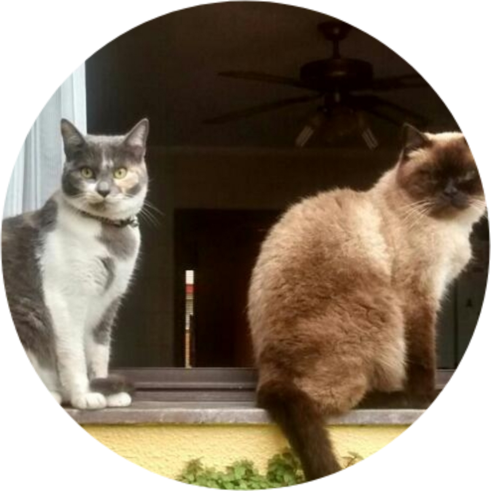

O que os fãs dizem
Giovana

"Ao Sr. Jonas Botelho:
O melhor cover de Leonardo;
Customizador de capas de álbuns;
Prolífico da literatura lasciva;
Mestre do voleibol;
Designer gráfico para eventos;
Que elogiava miha voz nos tempos de telefone fixo;
Sempre tem iogurte na geladeira;
Genitor do maior amor da minha vida.
Que sua vida continue trazendo atividades aleatórias e conquistas incomuns por muitos e muitos anos!"
Gabriel
"Mal conheço e já considero pacas!"
Gustavo
"Johnny Love: excelente marido, esplêndido pai, amante das artes, transcreve um mix de sentimentos a cada nova obra literária."
Eduardo
"Jonas me inspira.
Jonas cria a partir de seu coração.
Jonas capta a poesia onírica de viver, a vida e o amor da forma mais crua e humana.
Jonas dá amor ao ato de criar, ao ato de fazer existir. Jonas dá amor à safadeza.
Jonas cria a magia da sedução da forma mais doce, como a voz de uma ninfa, deusa da natureza, que me pega em seus braços e no toque suave e molhado de um beijo, me faz
delirar.
Jonas é meu herói da escrita."
Eduardo
"Meu tio Jonas!"
Cristiane

"Johnny pessoa rara! Coração gigante e mais puro que já conheci.
Tem inúmeras habilidades: escritor, pintor, escultor, desenhista, marceneiro, eletricista, carpinteiro, etc...
E a qualidade maior é ser o melhor marido e pai."